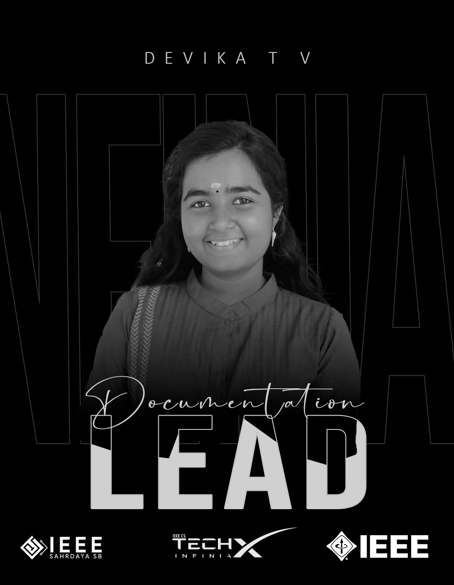
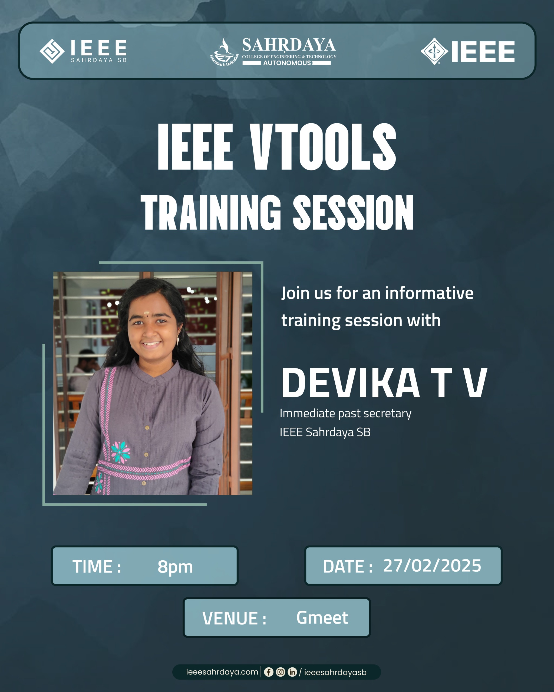

How IEEE Changed Me
I still remember the day it all began. It was my first year of engineering. A senior walked into our class to promote an IEEE event. While speaking, he said something that struck me deeply:
"A purely introverted person like me is confidently standing in front of you today - all because of IEEE."
That line stayed with me. At that time, I could barely speak in front of my own classmates without my hands trembling. But something inside me whispered, "If IEEE helped him, maybe it can help me too." That's the day I decided - I need to be a part of this.
The Girl Who Feared Public Speaking
Third semester. Saturday. I had to give a seminar in front of my class. My heart raced. Hands shivered. Breathing felt difficult. I was so scared that by the end, I broke down in tears. Speaking in front of even four people felt impossible. I started believing that public speaking wasn't for me. But IEEE slowly started to change that.

The First Small Victory
A year later, I was asked to lead a VTools training session at my Student Branch. When I held the mic this time… my hands didn't shake. That small victory meant everything to me. It made me realize: Fear doesn't disappear overnight. But when you face it, step by step, it fades. That's what IEEE gave me - the chance to face my fears.
From Participant to Volunteer
During our first flagship event, Altair, I sat in the audience as a participant. I still remember asking my friends, "Do you think we'll ever get a chance to volunteer for an event like this?" Just a year later, we were on the other side - as volunteers for Altair 2.0. Those three days taught me more than any textbook ever could.
And Then… A Leader
As Documentation Lead for TechX Infinia, I worked with an amazing team to pull off 3 days full of workshops, expos, talks, and more. On the final day, I stood there feeling proud - not just of the event, but of the person I had become. The girl who once cried giving a seminar was now confidently leading teams.

Giving Back as a Mentor
I even got the chance to guide the newly elected Execom team of IEEE Sahrdaya SB. Standing there, taking the session, it felt surreal -- like a full circle moment. Once, I was the nervous participant in these sessions. And now, I was mentoring others. That's the magic of IEEE - it turns participants into leaders and learners into mentors.

A Journey Recognized
From participant, to volunteer, to leader, to mentor. I proudly served as:
Receiving the 6 Pillar Award from IEEE Sahrdaya SB felt like a warm hug from the universe saying, "You've come so far."
This is Just the Beginning…
IEEE didn't just give me certificates or positions. It gave me confidence. It gave me friendships. It gave me memories I'll carry forever. The girl who once feared speaking now believes:
"Growth doesn't happen overnight. But with courage and the right people, anything is possible."
And this is only the beginning.